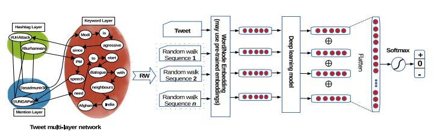
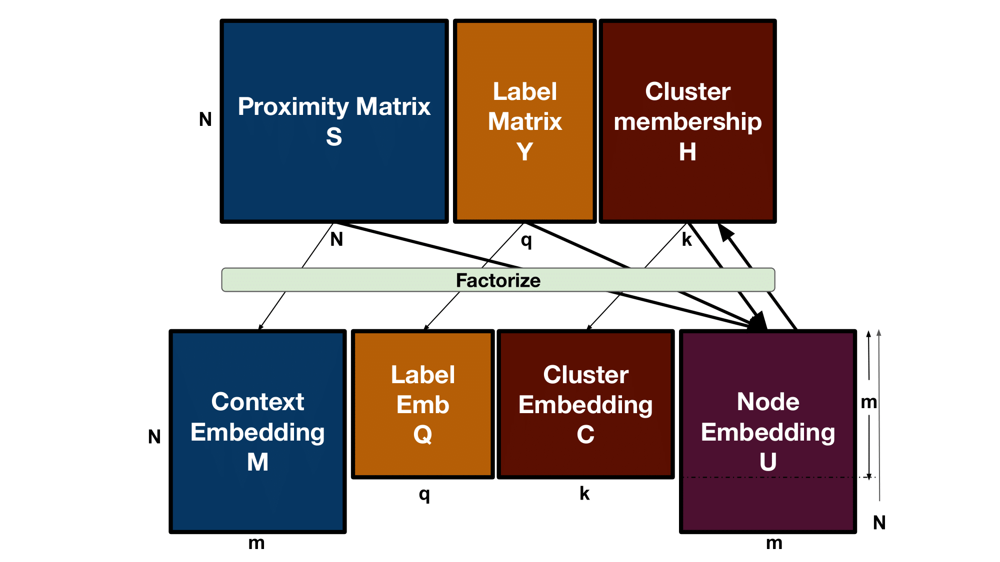
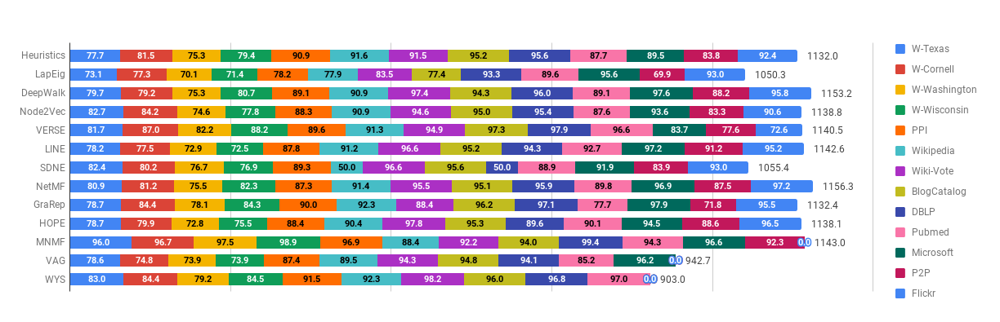
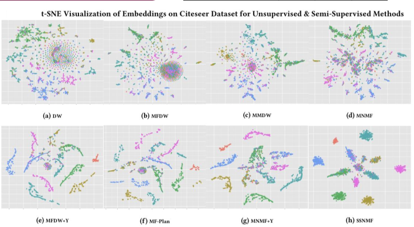
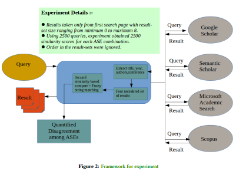

News & Activities
- Paper accepted at SIGKDD 2021.
- Paper accepted at SDM, EMNLP 2020.
- Interned at I.B.M Research Lab, Bangalore, India, under Dr. Sreyash Kenkre, have worked on Question Answering with Explainable Inference.
|
|
Research Interests
Network Representation Learning (NRL) with emphasis on complex graph structures exhibited in real-life data – heterogeneous information networks, multiplex networks, hypergraphs, etc. In the spectrum of NRL, my primary focus is on learning structure-aware representations of graph data to improve the quality of learned representations. I also take interest in exploring the depths of Natural Language Processing (NLP) to devise solutions for intricate problems.
|
|

|
Sentiment Analysis of Tweets using Heterogeneous Multi-layer Network Representation and Embedding
Gyanendro Loitongbam*,
Anasua Mitra*,
Sanasam Ranbir Singh.
Empirical Methods in Natural Language Processing (EMNLP), 2020
Conference Paper /
Supplement /
Code /
Slide
A framework to incorporate networked-view of tweets to improve text-only sentiment classification performance.
|
|

|
A Unified Non-Negative Matrix Factorization Framework for Semi Supervised Learning on Graphs
Anasua Mitra*,
Priyesh Vijayan,
Srinivasan Parthasarathy,
Balaraman Ravindran.
SIAM International Conference on Data Mining (SDM), 2020
Conference Paper /
Supplement /
Code /
Slide
A Semi-Supervised Learning (SSL) framework, USS-NMF, that allows for explicitly encoding different necessary priors to learn efficient node representations in a graph.
|
|

|
Network Representation Learning: Consolidation and Renewed Bearing
S Gurukar*, A Srinivasan*, P Vijayan*, G Bajaj, C Cai, M Keymanesh, S Kumar, P Maneriker, A Mitra, V Patel, B Ravindran, S Parthasarathy.
arXiv, 2019
Survey Paper /
arXiv /
Code
A survey paper on Network Representation Learning which systematically studies the performance of state-of-the-art unsupervised NRL methods on a variety of datasets to draw several key insights.
|
|

|
Semi-supervised learning for clusterable graph embeddings with NMF
Anasua Mitra*,
Priyesh Vijayan*,
Srinivasan Parthasarathy,
Balaraman Ravindran.
Relational Learning Workshop (R2L), Neural Information Processing Systems (NeurIPS), 2018
Workshop Paper /
Poster /
Slide
A Semi-Supervised Learning (SSL) model for learning cluster invariantnode representations that enforce high label smoothness within the clusters for network representation learning in homogeneous graphs.
|
|

|
On Low Overlap Among Search Results of Academic Search Engines
Anasua Mitra*,
Amit Awekar.
International Conference on World Wide Web (WWW), 2017
Short Paper /
arXiv /
Poster /
Code
A systematic study of disagreement among various Academic Search Engines, namely - Google Scholar, Microsoft Academic Search, Semantic Scholar & Scopus. One of key insight from this study is – the overlap in search result sets of any pair of academic search engines is significantly low and in most of the cases the search result sets are mutually exclusive, unlike in the case of popular web-search engines – Google & Bing.
|
|
Invited Talks & Workshops
- Presented a talk on Learning Semi-Supervised Cluster Invariant Node Representations with NMF at the third Indian Workshop on Machine Learning [iWML], IIT BHU on 3rd July, 2018.
- Delivered a talk on Real-time Crime Mapping for Delhi - an award winning mobile app idea at Make Delhi Smarter workshop, IIIT Delhi on 13th Feb, 2016.
- Participated in Conformal Prediction For Reliable Machine Learning workshop (Funded by the EPSRC-DST, Indo-UK Initiative in Applied Mathematics at IIT Hyderabad, Dec 2015).
|
|
{kind=link}